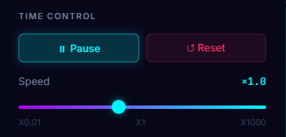
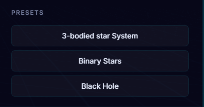
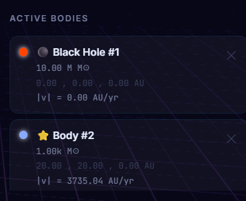
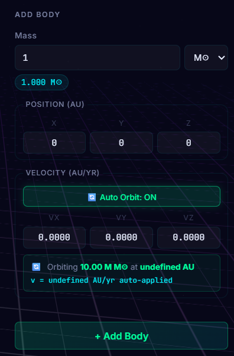

Master the relativistic gravity engine. Explore how to control time, spawn celestial bodies, and shape the cosmos in real-time.

Bend the flow of time to your will. The simulator allows you to observe celestial mechanics across millennia in mere seconds, or freeze reality entirely to analyze gravitational wells.

Don't want to build from scratch? Instantly load complex, balanced gravitational scenarios to observe specific relativistic phenomena.

Monitor the cosmos in real-time. The Active Bodies panel tracks every entity in the simulation, providing live telemetry on its position and mass.

The ultimate sandbox tool. Spawn completely custom celestial bodies by defining their exact mass, spatial position, and directional velocity.